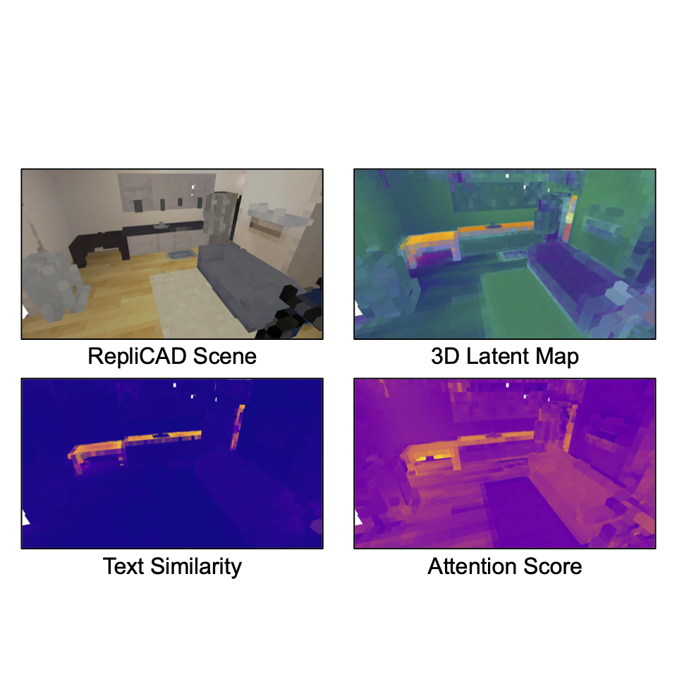
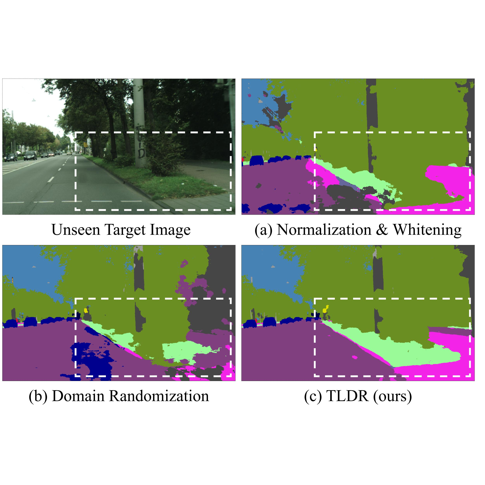

|
I am a PhD student at UC San Diego, working at Existential Robotics Laboratory under the guidance of Prof. Nikolay Atanasov. Previously, I was a research officer at the Agency for Defense Development (ADD), the South Korean counterpart to the U.S. DARPA. I received my B.S. in Electrical Engineering and Mathematics (double major) at KAIST. Email / CV / Linkedin / Google Scholar / Github |

|
|
I am focusing on building neural representations for robot policy learning. I am interested in the following topics:
|
|

|
Seeing the Bigger Picture: 3D Latent Mapping for Mobile Manipulation Policy Learning
Sunghwan Kim, Woojeh Chung, Yulun Tian, Zhirui Dai, Arth Shukla, Hao Su, Nikolay Atanasov RSS 2025 MOMA Workshop (Oral), RSS 2025 RoboReps Workshop (Best Paper Nominee) paper |

|
MISO: Multiresolution Submap Optimization for Efficient Globally Consistent Neural Implicit Reconstruction
Yulun Tian, Hanwen Cao, Sunghwan Kim, Nikolay Atanasov RSS, 2025 code / paper / project page |
|
|
Textual Query-Driven Mask Transformer for Domain Generalized Segmentation
Byeonghyun Pak*, Byeongju Woo*, Sunghwan Kim*, Dae-hwan Kim, Hoseong Kim ECCV, 2024 code / paper / project page |
|  |
Texture Learning Domain Randomization for Domain Generalized Segmentation
Sunghwan Kim, Dae-hwan Kim, Hoseong Kim ICCV, 2023 code / paper |

|
Data Gathering Trials for the Development of Military Imaging Systems
Maria Niebla, Duncan L. Hickman, Eunjin Koh, Chanyong Lee, Hoseong Kim, Chaehyeon Lim, Sunghwan Kim Proc. SPIE, Electro-Optical and Infrared Systems, 2023 paper |
|
|